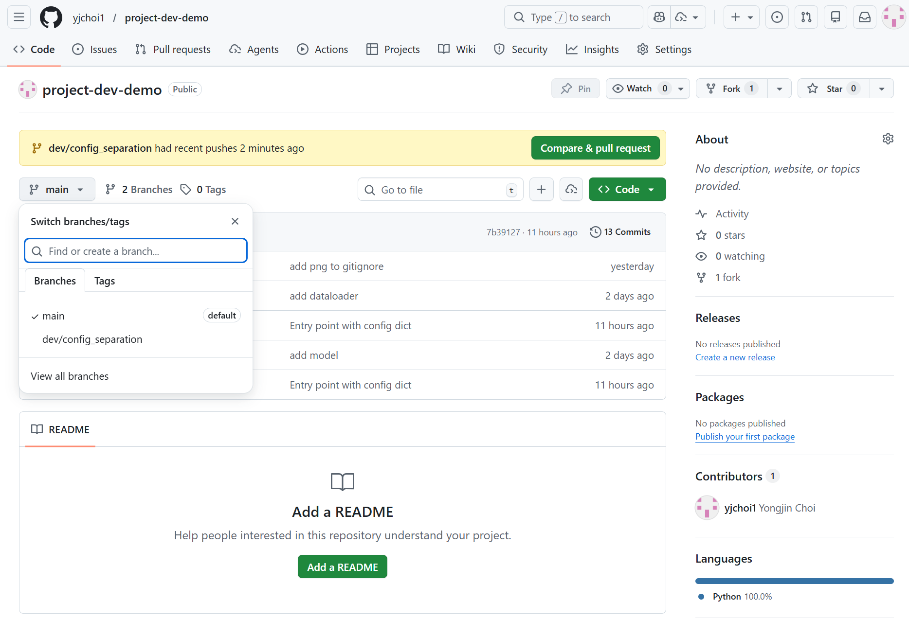
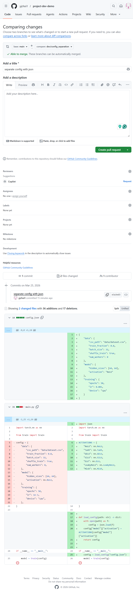
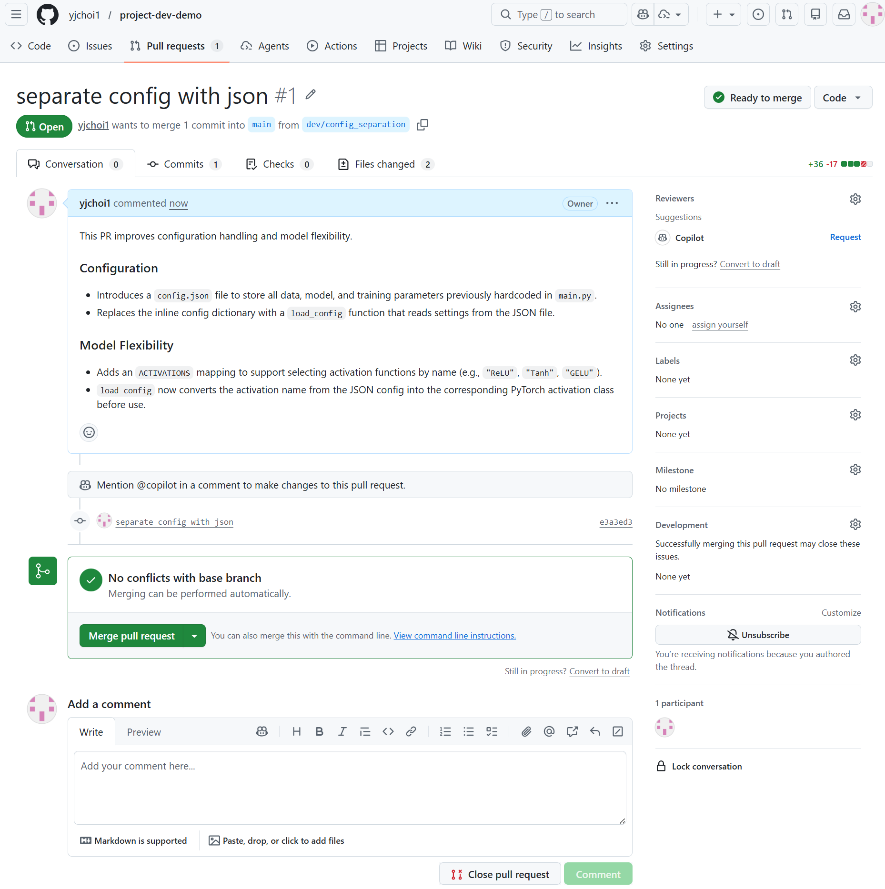
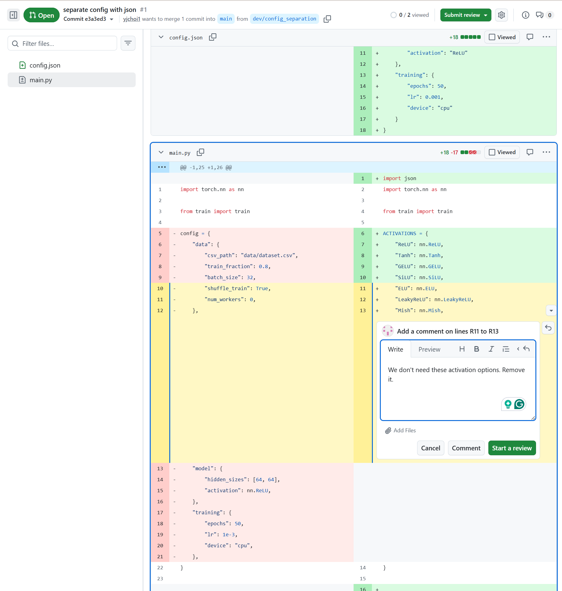
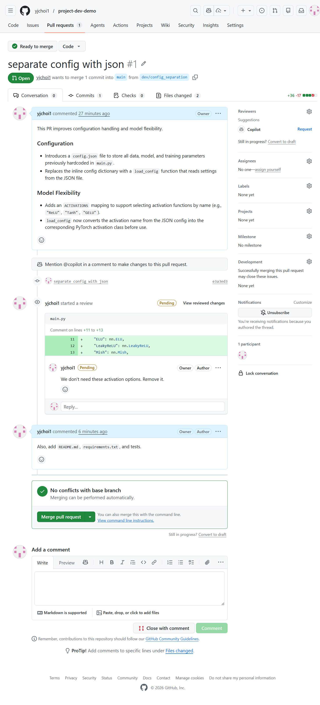
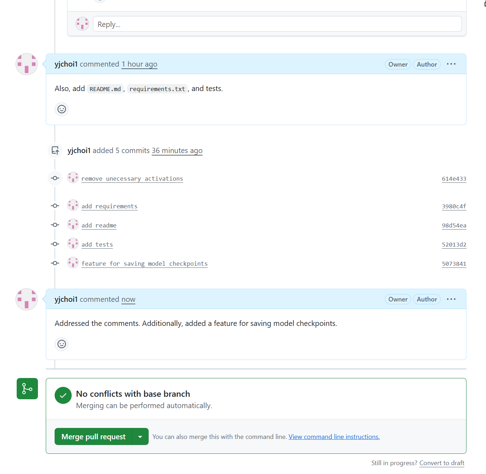
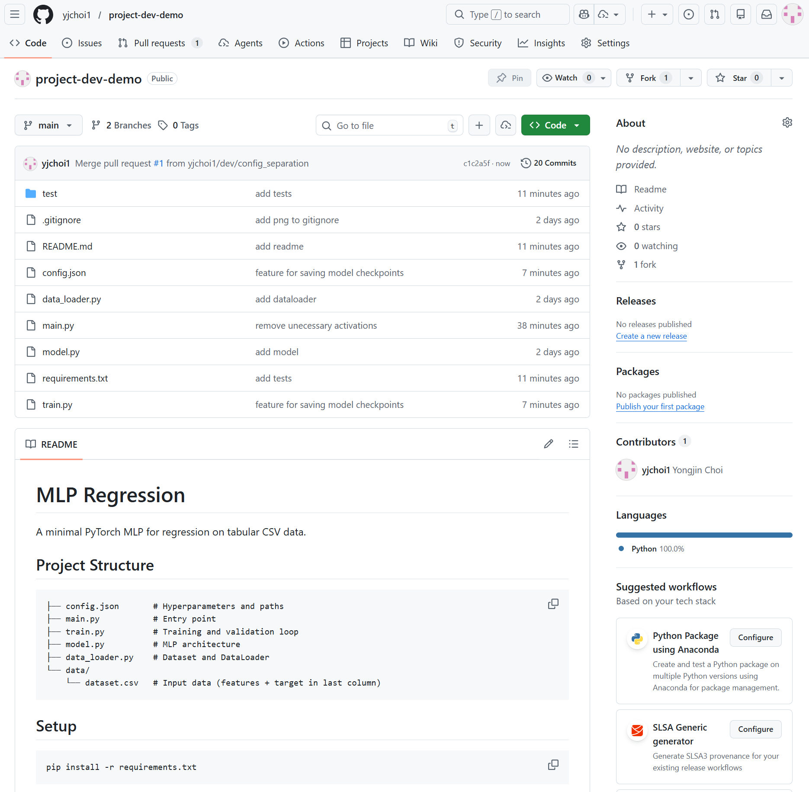
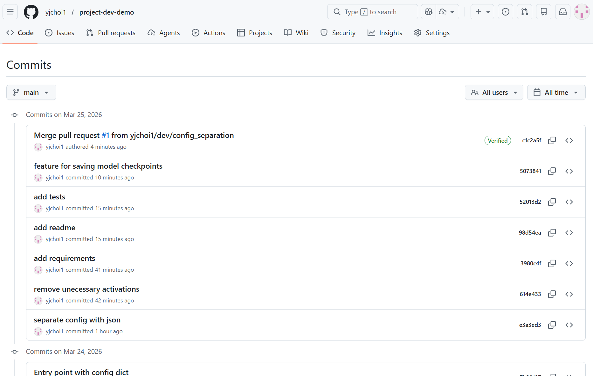

Pull request
Background
You've made changes and committed them locally. Now you want to share them with your collaborators: let them see the changes, review, discuss, and decide what to accept. This is what a pull request (PR) is for.
There are two standard workflows:
| Workflow | When to use |
|---|---|
| Branch-based PR | You have write access to the repo (e.g., team member). Create a feature branch, push it, open a PR to main. |
| Fork-based PR | You don't have write access (e.g., open-source contributor). Fork → change → open PR to upstream. |
How to pull request (PR)
Branch-based PR
The following shows a typical workflow for PR.
Here, we assume scenario where you directly clone the upstream without fork.
# Assume you start fresh from a remote `upstream`
# git clone <github-url>
git clone https://github.com/yjchoi1/project-dev-demo.git
Create and switch to a new dev/config_separation branch:
# make sure your are in `main` branch
git status
git checkout main
# Create and switch to a new `dev/config_separation` branch
git checkout -b dev/config_separation
Update the local code
Expand to see the updated code
import json
import torch.nn as nn
from train import train
ACTIVATIONS = {
"ReLU": nn.ReLU,
"Tanh": nn.Tanh,
"GELU": nn.GELU,
"SiLU": nn.SiLU,
"ELU": nn.ELU,
"LeakyReLU": nn.LeakyReLU,
"Mish": nn.Mish,
}
def load_config(path: str) -> dict:
with open(path) as f:
config = json.load(f)
config["model"]["activation"] = ACTIVATIONS[config["model"]["activation"]]
return config
if __name__ == "__main__":
config = load_config("config.json")
model = train(config)
Commit your changes:
Push your feature branch to the remote (not main)

Then, open a Pull Request (PR):
- Go to your repository on GitHub.
- You will see a prompt to “Compare & pull request”. Click it.
- Review the changes and submit the PR targeting the main project.

Write the PR description and hit Create pull request

Tip
You can ask github Copliot to review your PR. It will leave comments for bugs, security issues, code quality, and style issues.
Review the code & request changes

Comments view of the PR

Revise PR
Make changes in your local branch dev/config_separation, commit, push again with git push origain dev/config_separation.

Merge the Pull Request
If the pull request (PR) looks good, the repository owner or project maintainer can merge it into the main branch. Once merged, you will see that the remote main branch has been updated to include your changes.

Github repo tracks all these changes in commit history.

Fork-based PR
Here, we assume scenario where you have a fork of upstream, and then clone.
# 1. Fork the `upstream` to your github project.
# 2. Clone your forked remote
git clone https://github.com/<use-name>/<project-name>
Practice: Submit a PR
Now, try making any pull request (PR) to this learning module.
How about adding a nice logo for this learning module website and add your name as a contributor in the README? Any PRs are welcome though.